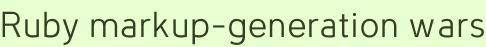

Ruby markup-generation wars
What happens when a Sun employee working in Ruby tells Ruby programmers how to correctly generate markup? They don’t take it so well. From chaoseffect:
Tim rants for a bit about things being ‘based in reality’ but that’s because he’s a goddamn Java coder, doomed to forever let his software write him. It doesn’t work when you come over to Ruby, because we don’t like that shit, and we don’t like Tim, either, or his INTERNET BLOG.
Well, one thing is I’m subscribing to chaoseffect. The other is that I hope Ruby programmers continue scrabble over ways of generating markup that don’t use real HTML templates. Because you would never want to edit them with a live preview or WYSIWYG editor.
Smoke your overwhelming advantages while you got ’em.
Add a comment